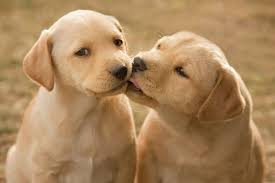

Man's best friend & Our favourite clients!!!



We are a family owned business who have been priveleged to look after and pamper your dog since our foundation in 1980.
Two generations of our family have been involved in this business and we now employ 5 fully trained specialists.
Take a look at the SERVICES we can provide for your precious pet. Enjoy our GALLERY and see some of our happy customers.
Our ethos was, is and always will be to provide a first class, caring and reliable grooming experience for the dog in your life.
"Wonderful service, our family pet so well looked after." John & Margeret
"Buster has never been happier or looked better. Well worth the journey!!!" Irene, Castleblaney
"Lily would't be the easiest of dogs with strangers but she took to pupp-paradise people immediately" Marie, Blackrock
"Our king spaniel Ruby just looked a treat. Thank you so much XXXX" Jean, Maynooth, Co. Kildare
"The service Pup Paradise advertised was the service they provided. First class!!!" Peter
"Our Stallone went in looking like a war movie extra. He came out looking like a film star :)" David & Carol, Malahide, Co Dublin